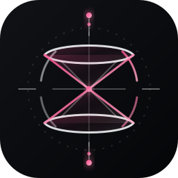

Neutral silver geometry with a controlled coral signal. No motion.
A clearer signal
Give GIR a mark that feels alive.
A browser-only test surface for the next GIR identity: a light cone, an orbital axis, and a restrained active state that can hold attention without shouting.

active / orbitingNamed assets
Two marks, one system.
Use the static mark for identity surfaces. Use the animated mark for loading, active work, and “GIR is thinking” states.
Eight-second orbit, soft signal pulse, and a built-in reduced-motion fallback.
Motion tests
Feel the states before shipping them.
The controls below are only for review. They wrap the same hosted static asset with different timing and emphasis.
orbit / 8s